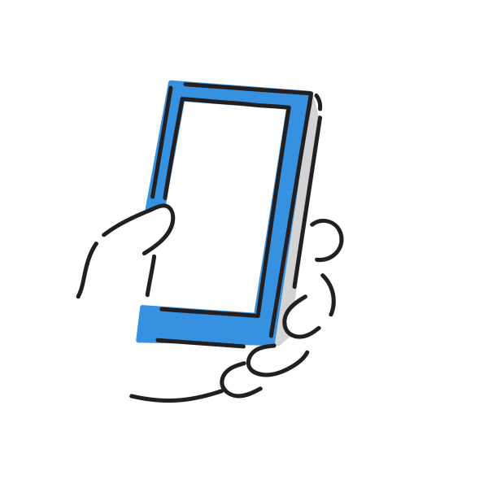
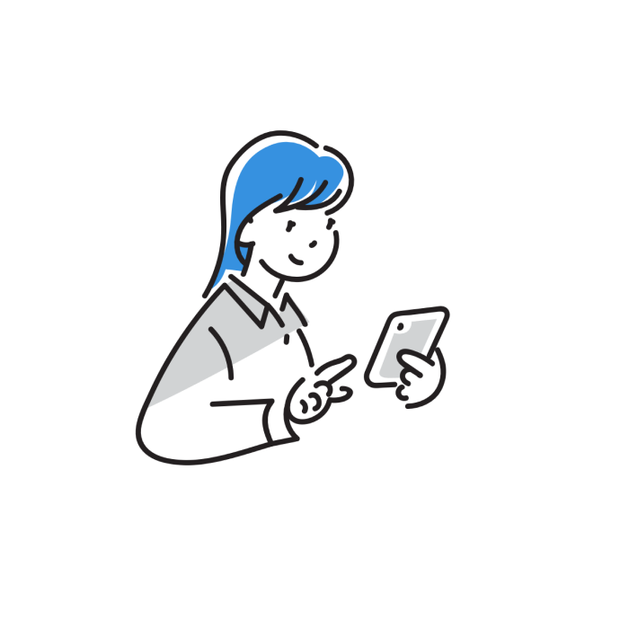
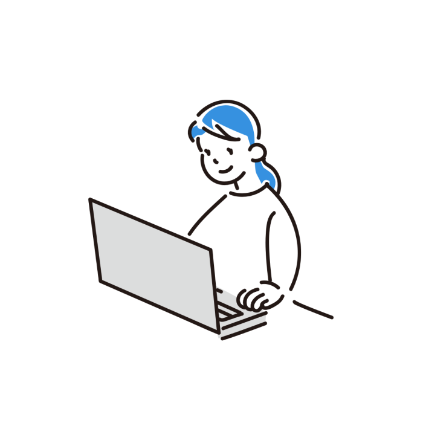
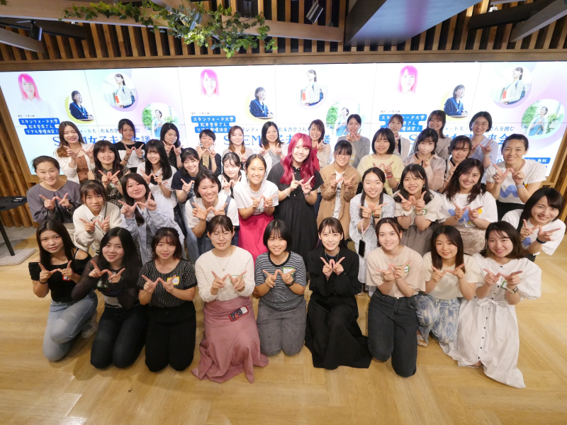
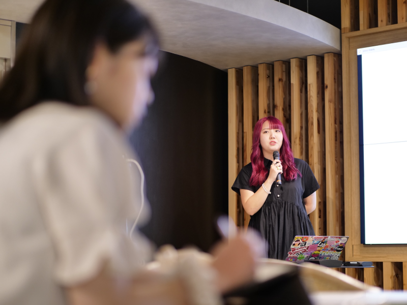
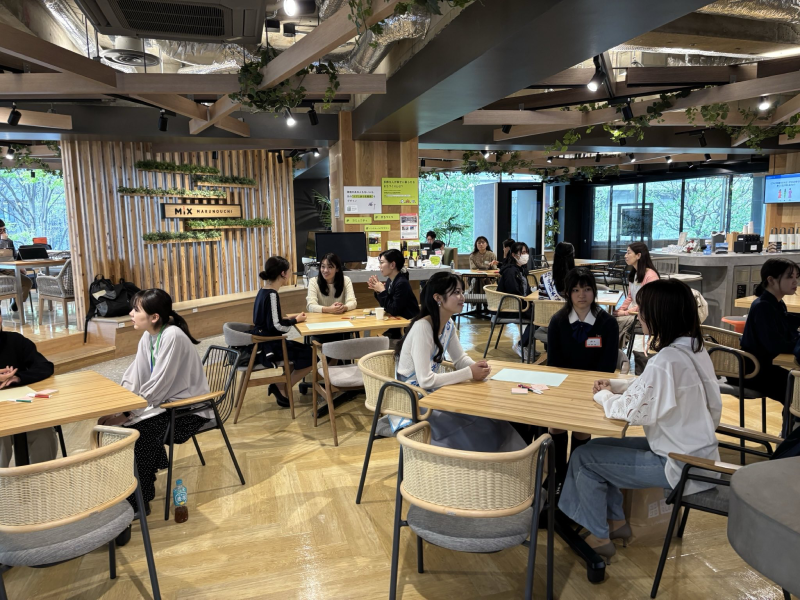

Wom-tech とは？
繋がりは、チカラ
居場所をこえて、可能性を広げるコミュニティ
対象者：理工系女子大学生・女性技術者・科学者
目的：会社や大学などの枠を超えて互いにつながることで、
理工系分野で自分らしいキャリアを切り拓くコミュニティを目指しています
＼＼＼こんな方におすすめ／／／
- ✔ 自分に合ったキャリア選択がしたい方
- ✔ 周囲にロールモデルがいない方
- ✔ 多様性で理工系を盛り上げたい方
Wom-techで出来ること
まなぶ
年数回のイベントを通じ、キャリアパスを強化するために必要な様々な知識を学ぶことができます
つながる
オンライン交流会を通じて所属と世代を超えたつながりをつくります
えがく
Wom-tech独自の「女性活躍ダッシュボード」「適職診断ツール」で自分に合ったキャリア選択をサポートします
Wom-techメンバー登録までの流れ
Wom-techはメンバーの方に安心安全な場を提供するため
メンバーの登録までに複数のステップを設けています

1.申し込み
下記の申込みボタンのリンク先から必要事項を記入して、お申込み下さい。

2. 説明会予約
後日ご案内する説明会をご予約下さい。（オンライン・所要時間約15分）

3. 利用開始
メンバー限定のSlackにご招待します。
コミュニティの実績
理工系女性約50人のコミュニティ・メンバーと繋がることができます
大学生の所属学部：工学部・理学部・理工学部
社会人の所属：自動車メーカ・電子機器メーカなど
イベント開催実績
- 2024.2 ものづくりとジェンダーの新しい関係（名古屋工業大学・加野准教授）
- 2024.6 STEM女子未来会議（スタンフォード大学・松本杏奈さん）
- 2024.9 生成AIの仕組みと活用（株式会社クラフターCEO・小島舞子さん）
- 2024.12 近代＝男性主導社会の黄昏を前に（大阪大学/京都大学名誉教授・伊藤公雄さん）
-
2025.4 STEM女子未来会議（早稲田大学・高坂実優さん、中央大学・高橋彩乃さん
お茶の水女子大学・篠田万穂さん、株式会社キヤノン 飯淵可奈江さん）
イベントの様子
  Wom-tech運営からのご挨拶
代表：小笠原 知子
工学部機械工学科を卒業後、2008年、重工業メーカに入社。航空宇宙製品の生産技術開発に従事。育休後の復職に「働きたいけど働けない」経験がきっかけとなって2021年に完成車メーカーに転職。本業の傍ら立ち上げた、理工系女性コミュニティWom-techを運営している。
お問い合わせ
私たちの活動に賛同し、Wom-techをご利用いただける法人会員サービスもご提供しております。お気軽にお問い合わせください。
イベントの共催・協賛・後援／学生向けのイベント開催／学生向けのPR記事配信
お問い合わせはこちら